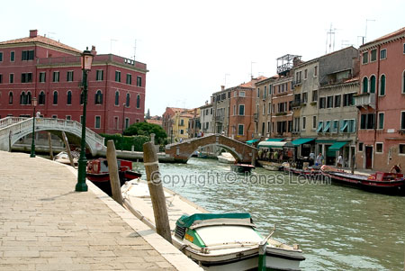
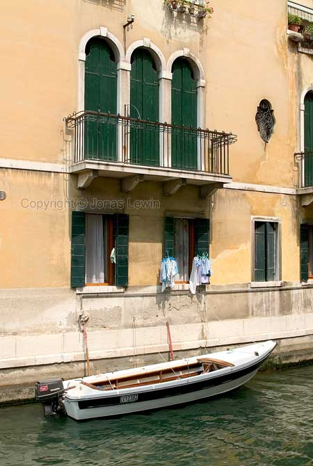
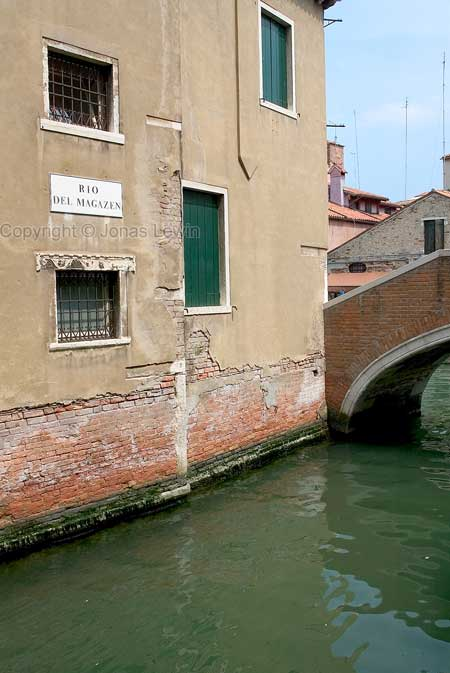
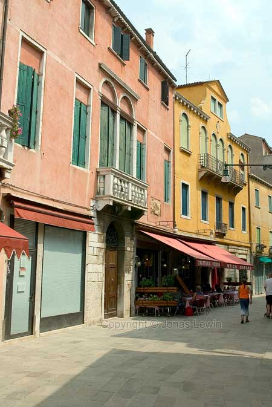
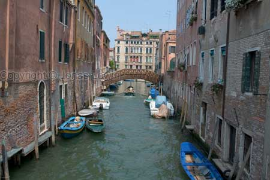
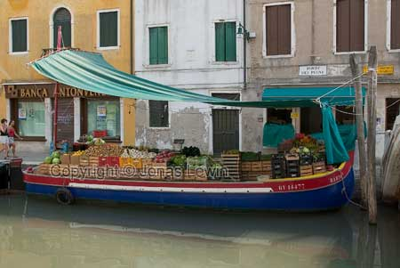
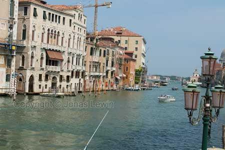
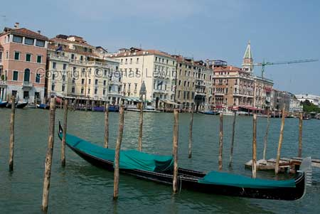
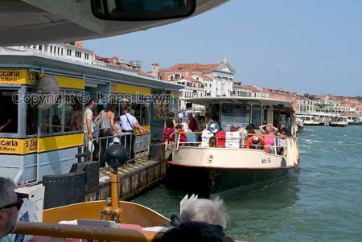

|
Venice
is another famous city in Italy. And what makes it so special is the
canals which are much more frequent here than in any place in The
Netherlands.
Here we see a quite normal view of Venice, nothing as spectacular as the
later photos.
How
do you enter and exit this boat? Thru the windows? It's a fairly large step.
Rio
Del Magazen. Very wet street.
For
those of us that doesn't have a boat, there are always other ways of
transport. Walking is preferred. And as we are in Italy, there are a few
pizzerias within 2 minutes of walking.
View
of a normal road.
The
delivery boat, delivering fruit and vegetables to the local shops.
This
is a quite large road. A freeway if you like.
The
local parking place.
The
bus stop.
|